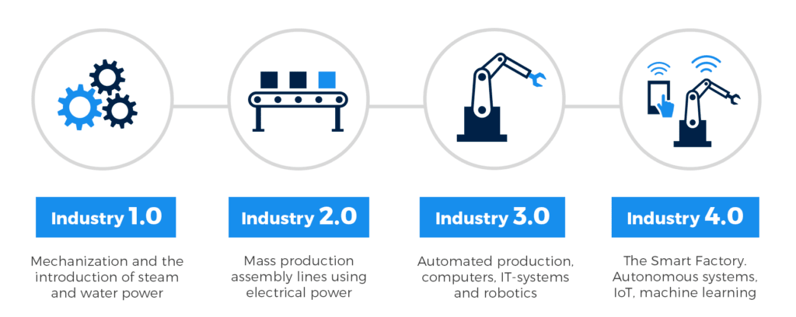
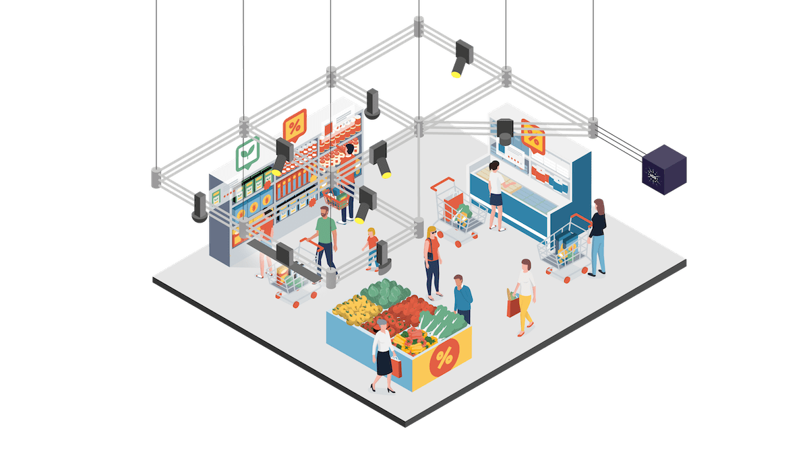
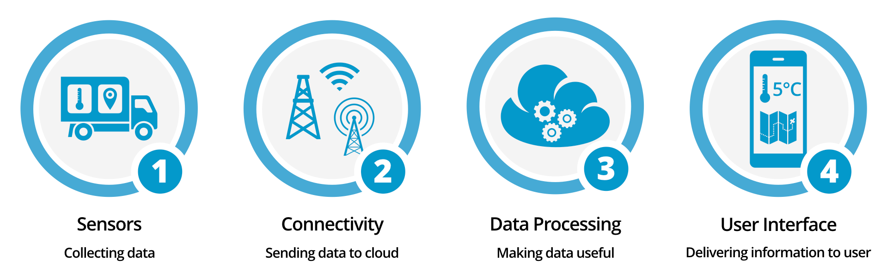

Industry 4.0.Internet of things
What is Industry
?
The Four Industrial Revolutions
Сomponents in Industry 4.0
What Is the Internet of Things (IoT)?

Internet of Things definition: connected objects and devices (aka “things”) that are equipped with sensors, software, and other technologies that allow them to transmit and receive data – to and from other things
Most known IoT system
Smart Home
Wearables

Autonomous vehicles
Smart retail
How does IoT work?
Amazon Go: No Checkout, No Lines
IoT markets projections
Programming languages used for IoT software development